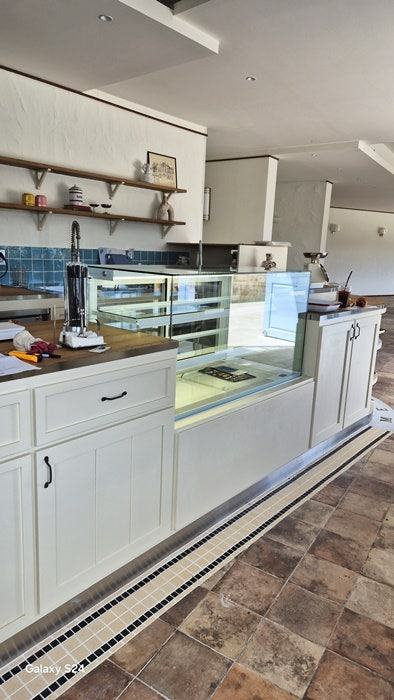
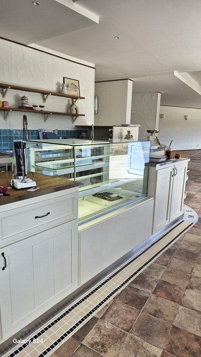
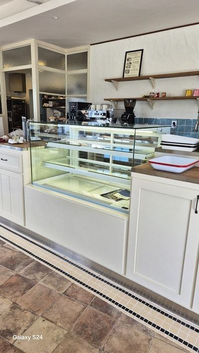
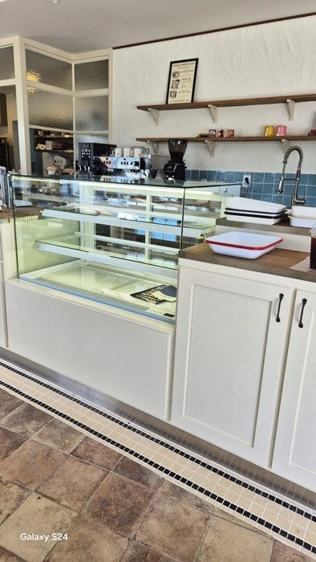
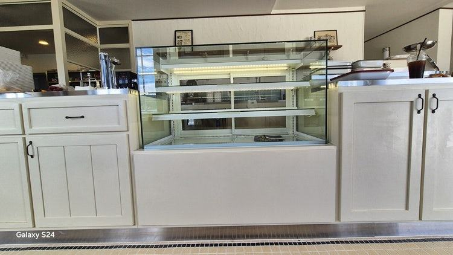
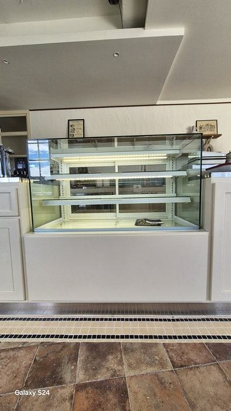
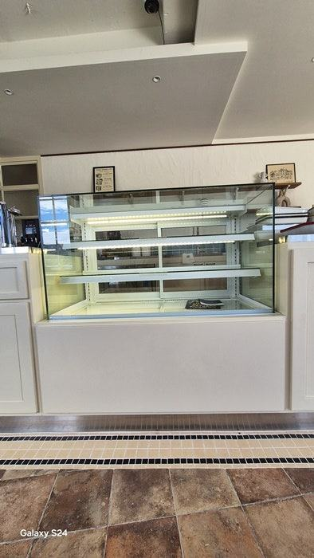
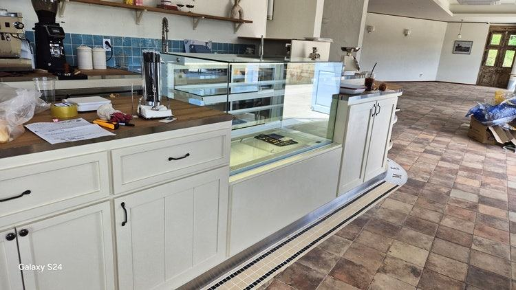
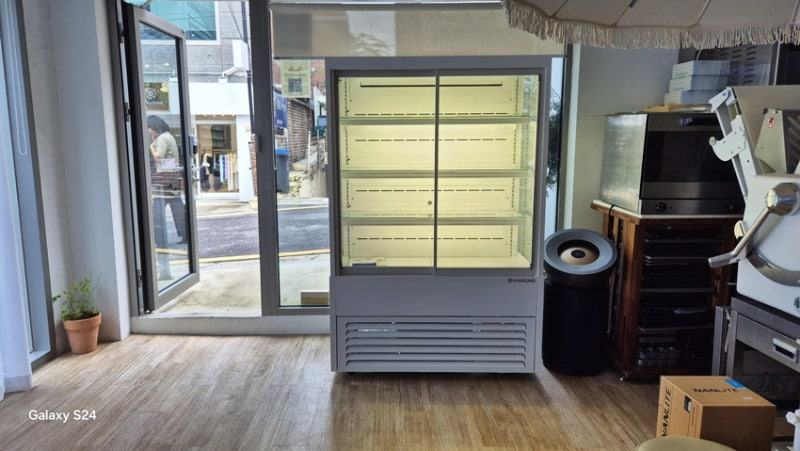

과일진열쇼케이스
과일쇼케이스 추천, 판매 방식별로 고르는 기준

과일쇼케이스는 어떤 방식으로 파는지에 따라 맞는 제품이 갈립니다. 손님이 직접 고르는 낱개·소분 판매는 앞문형이나 오픈형, 직원이 꺼내 주는 컷과일·선물 과일은 뒷문형이 맞고, 수분이 쉽게 날아가는 품목이 많다면 습도까지 고려한 냉각 방식을 고르셔야 합니다.
안녕하세요. 과일 매장 냉장 진열장을 맞춤으로 제작하는 한성쇼케이스입니다.
과일가게나 청과 코너를 준비하시는 사장님들이 "과일쇼케이스 뭐가 좋아요?"라고 물으시면, 저희는 먼저 "어떻게 파실 거예요?"라고 되묻습니다.
같은 과일이라도 박스째 파는 매장과 컷과일 컵을 파는 매장은 필요한 진열장이 전혀 다르기 때문입니다.
과일은 색과 윤기가 곧 상품성입니다. 진열장 선택을 잘못하면 하루 이틀 만에 표면이 마르거나 물기가 맺혀, 손님 손이 가지 않는 과일이 늘어납니다.
오늘은 판매 방식별로 과일쇼케이스를 고르는 기준을 문 구조, 냉각 방식, 단 구성, 조명 순서로 정리해 드리겠습니다.
1. 손님이 고르는지, 직원이 꺼내는지
낱개나 소분 팩을 손님이 직접 집어 가는 매장이라면 앞문형이나 오픈형이 회전이 빠릅니다. 반면 컷과일 컵이나 선물용 과일처럼 직원이 꺼내 포장해 주는 방식이라면 뒷문형이 냉기 손실이 적고 위생 관리도 쉽습니다.
두 방식을 다 쓰는 매장도 많습니다. 이럴 땐 한 대에 모든 걸 담기보다, 손님용 진열대와 직원용 냉장 진열장을 나눠 동선을 분리하는 편이 혼잡을 줄입니다.
- 주력 판매 방식(박스·소분·컷과일)을 먼저 정하세요.
- 포장을 직원이 하는지 손님이 하는지 정하세요.
2. 냉각 방식과 습도
직냉식은 구조가 단순하고 수리가 쉬운 편이라 채소·과일 보관용으로 많이 쓰입니다. 대신 칸마다 온도 차가 생길 수 있고 성에를 주기적으로 녹여야 합니다.
간냉식은 바람으로 냉기를 고르게 돌려 온도가 균일하고 성에 걱정이 적지만, 바람 때문에 과일 표면이 마르기 쉽습니다.
결국 과일쇼케이스는 온도만큼 습도가 중요합니다. 너무 습하면 표면에 물이 맺혀 조직이 물러지고, 너무 건조하면 수분이 빠져 윤기가 사라집니다.
진열 시간이 긴 품목이 많다면 이 부분을 상담 때 꼭 말씀해 주세요.


3. 단 수와 층고
단이 많다고 좋은 게 아닙니다. 수박, 멜론, 파인애플처럼 큰 과일은 층고가 높아야 하고, 베리류나 소분 팩은 단을 늘려 진열 면을 넓히는 편이 유리합니다.
단을 너무 많이 넣으면 아래 칸이 그늘져 과일이 어둡게 보입니다.
손님 시선이 가장 먼저 닿는 중간 단에 제철 과일이나 대표 상품을 두도록 높이를 설계해 보세요.
- 가장 큰 과일과 가장 작은 팩의 높이를 재 두세요.
- 제철 과일을 둘 중간 단 높이를 정하세요.
4. 과일 색을 살리는 조명
과일은 붉은색, 노란색, 초록색이 섞여 있어 조명 색에 따라 인상이 크게 달라집니다. 진열할 과일을 놓고 조명을 비교해 보시는 게 가장 확실합니다.
조명 위치도 중요합니다. 맨 위에만 조명이 있으면 아래 칸이 어두워지니, 단마다 조명을 넣는 구성을 검토해 보세요.
조명에서 나는 열도 생각해야 합니다. 딸기나 체리처럼 표면이 예민한 과일은 조명 바로 아래에 오래 두면 빨리 지칠 수 있으니, 진열 위치를 조금씩 바꿔 가며 상태를 살펴보시길 권합니다.
매장 천장 조명 색과 쇼케이스 내부 조명 색이 크게 다르면 과일 색이 들떠 보이니 두 조명을 함께 켜 놓고 비교해 보세요.
체크리스트
- 주력 판매 방식과 포장 주체
- 앞문형·뒷문형·오픈형 중 문 구조
- 직냉식·간냉식과 습도 관리
- 큰 과일 층고와 소분 팩 단 수
- 단별 조명 여부와 조명 색
현장에서 자주 보는 경우: 들여놓고 나서야 매장과 안 맞는다고 느낄 때
큰마음 먹고 들인 진열장이 막상 매장에 놓고 보니 어울리지 않는다는 상담을 자주 받습니다. 원인을 따라가 보면 문 위치를 운영 방식과 상관없이 골랐거나, 단 수를 많이 넣어 상품이 답답해 보이고 아래 칸이 어둡거나, 조명이 위쪽에만 달려 아래 칸에 그늘이 지는 경우가 대부분이었습니다.
그래서 상담할 때는 먼저 직원이 꺼내 주는 방식인지 손님이 직접 담는 방식인지를 정하고, 주력 상품 높이에 맞춰 단 수와 층고를 잡은 뒤, 단마다 조명을 넣을지 결정하는 순서로 진행합니다.
기성 제품에 매장을 억지로 맞추기보다 판매 방식에 맞춰 구성을 잡는 편이 길게 보면 비용을 아낍니다.










자주 묻는 질문
과일쇼케이스는 직냉식과 간냉식 중 무엇이 좋나요?
보관 위주이고 수리 편의를 중시한다면 직냉식, 온도 균일과 성에 관리가 중요하다면 간냉식이 맞습니다.
진열 품목과 진열 시간을 알려 주시면 습도까지 고려해 함께 정해 드립니다.
컷과일 판매용 진열장도 만들 수 있나요?
컵이나 소분 용기 높이에 맞춰 단을 구성하고, 직원이 꺼내기 편한 뒷문형으로 제작할 수 있습니다. 용기 규격을 알려 주시면 단 높이를 맞춰 드립니다.
설치 후 A/S는 어디서 받나요?
한성쇼케이스는 전국 240여 개 A/S 센터를 운영하고 있습니다. 대표전화 031-986-2458로 접수하시면 가까운 센터에서 대응합니다.
매장 조건에 맞춰 만드는 한성쇼케이스
원하시는 제품 사진과 설치할 공간 사진만 보내 주셔도 매장에 맞는 구성을 추천해 드립니다.
- 전국 240여 개 A/S 전담 센터 운영
- 본사 대량 자재 매입으로 품질 대비 합리적인 가격
- 유럽제·삼성 냉각 콤프레셔 적용
- 국내 최초 쇼케이스 전문 디자이너 상주
매장 폭과 원하는 진열 구성을 알려 주세요. 실측과 견적을 안내해 드립니다.
031-986-2458